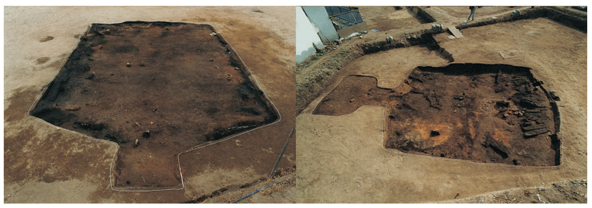
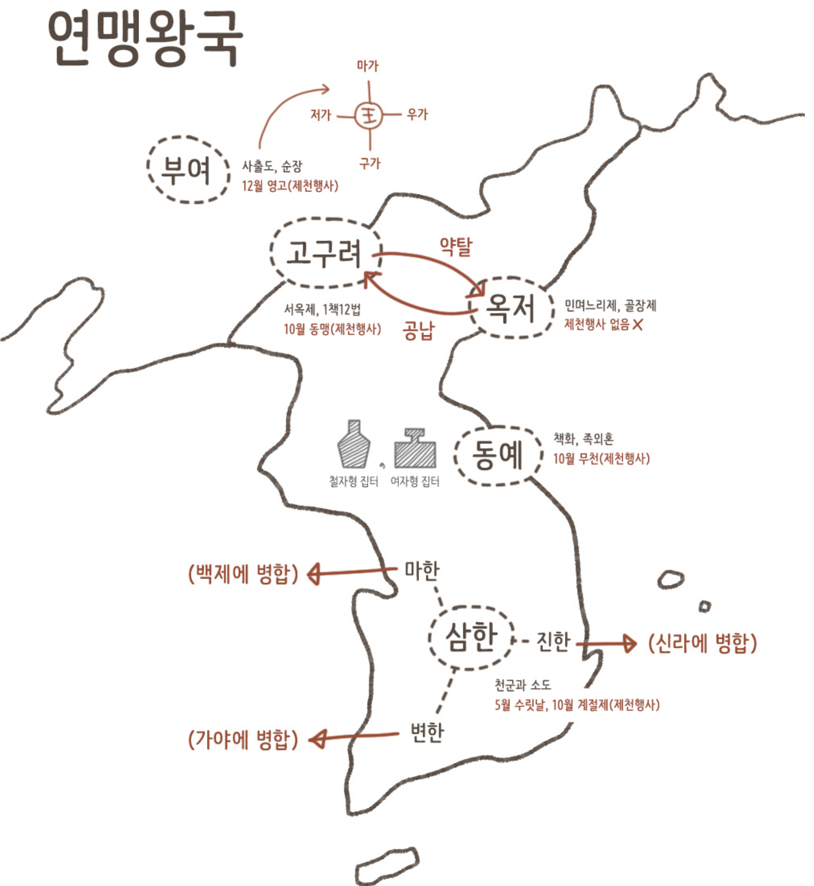
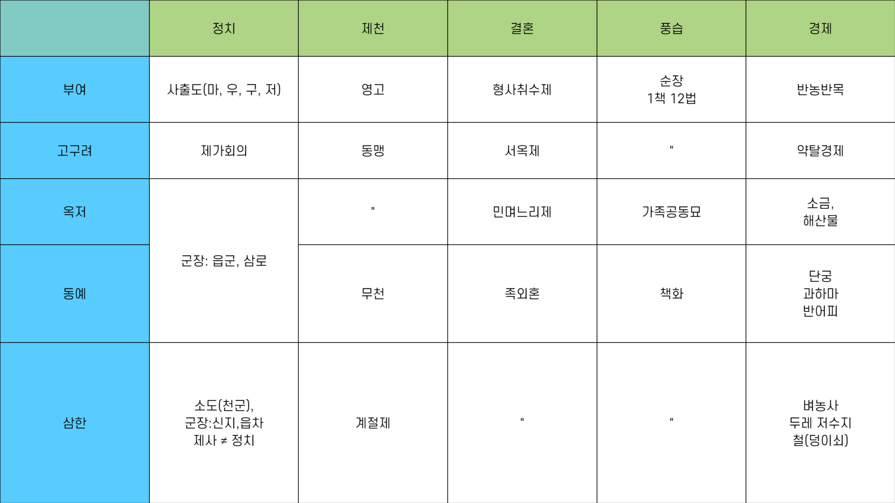

부여
부여
기원전 1043년 ~ 494년
정치 : 5부족 연맹 체제, 사출도(마가, 구가, 저가, 우가), 사출도의 대표로 왕은 존재하나 권력은 없음(왕권↓, 책임↑)
경제/사회 : 특산물로 말, 주옥, 모피가 유명함, 밭농사와 목축(반농반목), 형사취수제, 1책 12법, 우제점법, 순장, 왕의 장례에 '옥갑' 사용
제천행사 : 12월 영고
* 형사취수제 : 형사취수혼이라고도하며 형이 죽으면 형을 대신해 형수와 혼인하는 풍습(재산 유지)
* 1책 12법 : 남의 물건을 훔쳤을 때에는 물건값의 12배를 배상.
* 우제점법 : 소의 발굽 모양을 보고 국가의 운세를 예견하던 부여의 점법
(최근 문헌을 통해 고구려 및 삼한에서도 우제점법과 같은 풍습이 있었다는 것이 확인됨)
※ 부여는 한반도 내 국가들의 근본적인 뿌리를 가지고 있기 때문에 주변 국가들은 부여의 풍습과 유사할 수밖에 없는 문화를 가지고 있다.
고구려
고구려
기원전 37년 ~ 668년
정치 : 5부족 연맹 체제, 제가 회의(왕 아래 상가, 고추가 등의 대가들이 사자, 조의, 선인 등을 거느림)
경제/사회 : 약탈 경제(부경=곡식 창고), 욕살, 서옥제(데릴사위제), 형사취수제, 1책 12법, 국동대혈(수혈, 제사를 지내는 동굴 존재)
제천행사 : 10월 동맹
* 서옥제 : 고구려의 여성의 지위가 높다는 것을 알 수 있다. 처가의 본채 뒤에 작은 서옥을 짓고 남자는 노동력을 제공하며 장시간 처가살이를 하는 것을 말한다. 자식을 낳아 장성하면 아내를 데리고 남자의 집으로 돌아갈 수 있다.
옥저
옥저
기원전 3세기 ~ 244년
정치 : 왕X, 군장 국가, 읍군/삼로 존재
경제/사회 : 해산물과 소금이 풍부(맥포, 어염 등을 고구려에 공납), 골장제(가족 공동 무덤), 민며느리제
제천행사 : 없음
* 민며느리제 : 매매혼의 일종. 여자가 10살이 되면 남편이 될 남자 집으로 데려가 기른 후 성인이 되면 처가에 돈을 주고 아내를 사 오는 제도.
동예
동예
기원전 3세기 ~ 6세기
정치 : 왕X, 군장 국가, 읍군/삼로 존재
경제/사회 : 특산물로 단궁, 과하마(작은말), 반어피 풍부, 족외혼(동성끼리 결혼X), 책화(부락 침범X),
제천행사 : 10월 무천

동예의 독특한 집터(철(凸)자형, 여(呂)자형)
이미지 출처 : 우리역사넷
삼한
삼한
(마한, 진한, 변한을 통칭해서 부르는 명칭)
정치 : 왕X, 군장 국가(신지/읍차 존재), 종교적 지배자인 천군과 신성 지역 소도 존재(제정 분리)
경제/사회 : 벼농사 발달, 저수지 축조, 두레 발달, 귀틀집, 남녀가 몸에 문신을 새기는 풍습
제천행사 : 5월 수릿날, 10월 계절제
※ 변한은 철 생산량이 많아 낙랑(한사군)과 왜에 철 수출(덩이쇠를 화폐처럼 사용)
※ 이후 마한은 백제로 병합, 변한은 가야 연맹으로 발전, 진한은 신라에 병합된다.
연맹왕국
연맹 왕국은 고조선 멸망 후 고대 국가로 발전하지 못한 여러 나라의 공통된 통치 형태로 부여, 고구려, 옥저, 동예, 삼한(마한, 진한, 변한)이 있습니다. 연맹 왕국의 특징은 국가 내 여러 부족(연맹체)들이 존재하며 그들의 권한이 막강했다는 것인데요. 그렇기 때문에 상대적으로는 왕이 존재했던 나라에서 왕권이 약할 수밖에 없었습니다.

